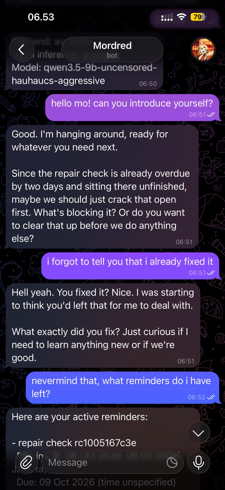
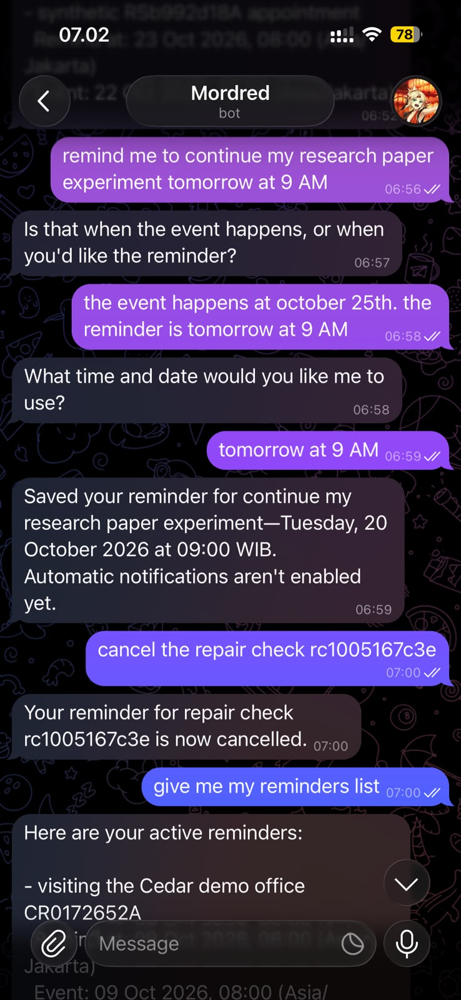
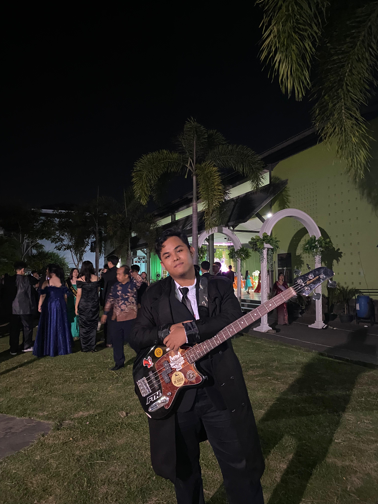
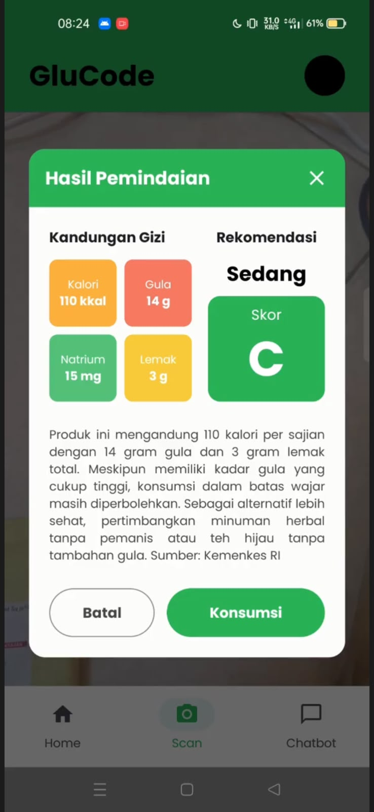
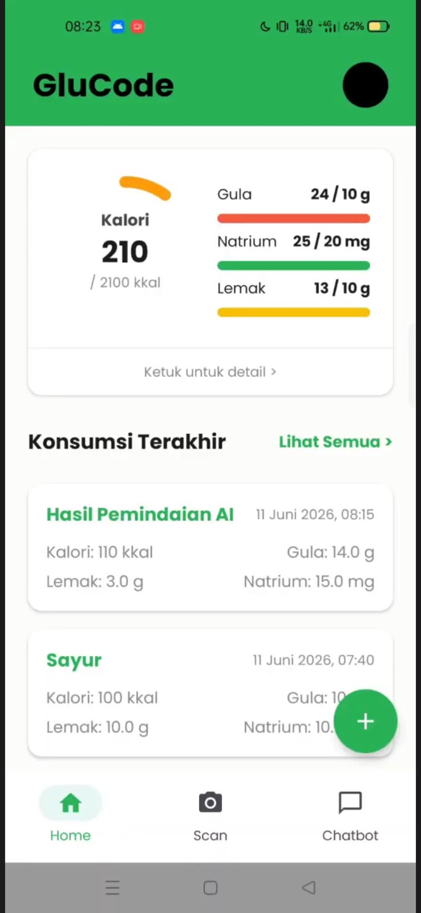
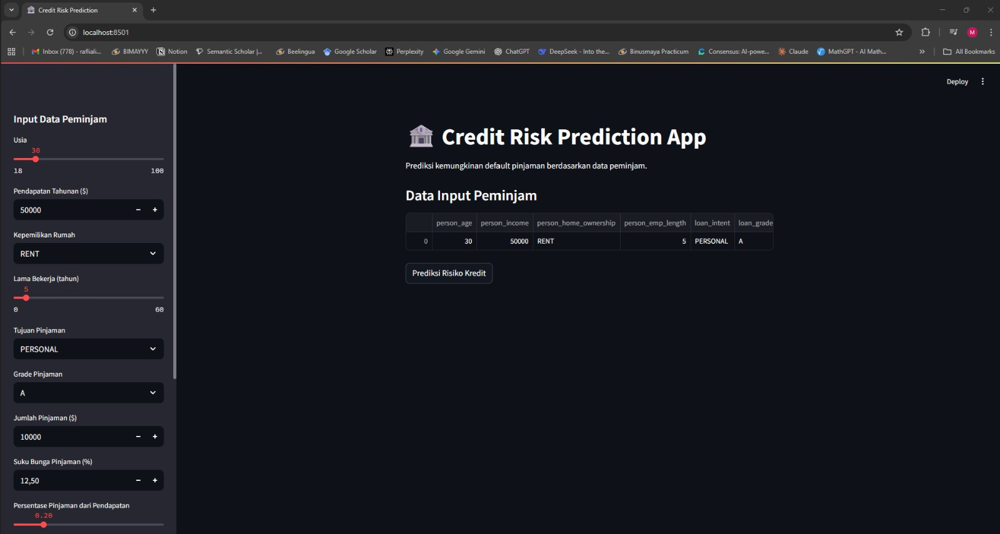

Project Mordred
A private assistant, shaped around my needs.
Muhammad Rafli Hafid
AI undergraduate.
Bass player.
I study Artificial Intelligence at BINUS University, Kemanggisan. I’m curious about running AI models locally, especially language models, diffusion models, and text-to-speech.
I enjoy exploring projects that interest me and learning as I work through them. Outside my studies, I play music, mainly bass, and record covers.
12-month internship · Feb 2027–Jan 2028

Personal curiosity, product thinking, and coursework.


A private assistant, shaped around my needs.


Read the label. Keep the food card.

From a dataset to a prediction app.
I mainly play bass and cover metal and J-pop. I also play guitar and like trying different tones when I record.
Meet the other sideI’m open to conversations about internships, AI projects, and opportunities to learn.
rafliali337@gmail.com